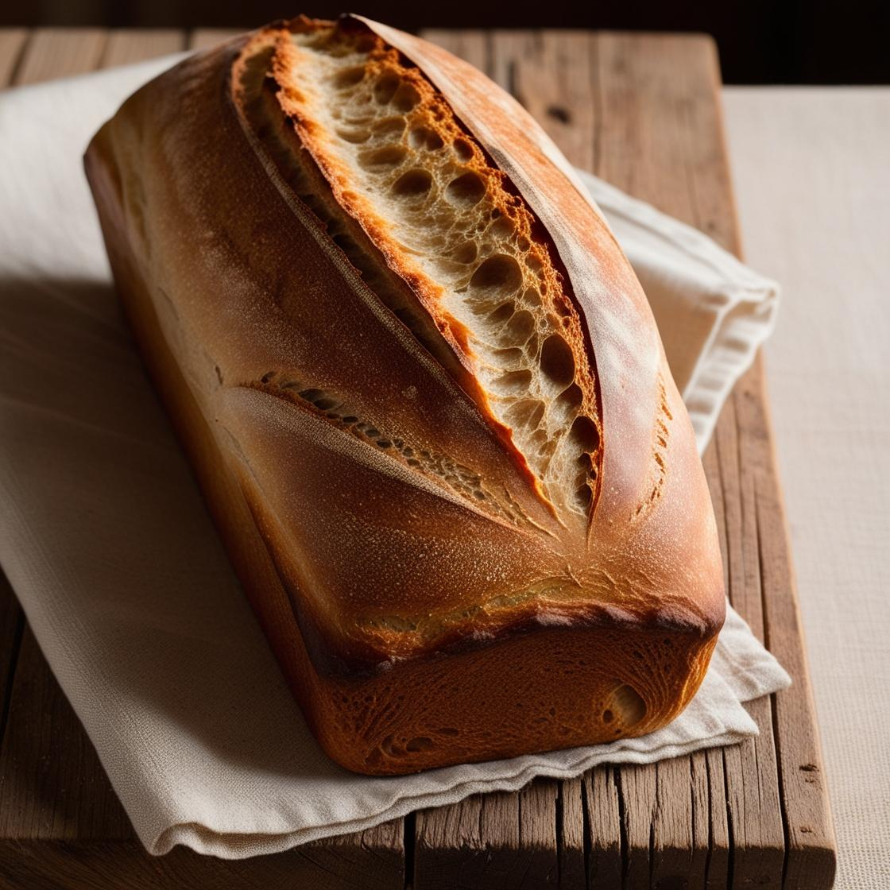

버터톱 식빵 만들기
재료 준비하기

- 강력분: 1000g
- 설탕: 480g
- 소금: 20g
- 이스트: 12g
- 버터: 240g
재료 혼합하기
재료를 고루 섞어 반죽을 시작할 준비를 합니다.
반죽하기
반죽기를 이용하여 글루텐 형성이 충분히 될 때까지 반죽합니다.
1차 발효
반죽을 따뜻한 곳에서 27~30°C로 약 50~60분 동안 발효시킵니다.
분할

반죽을 균등한 크기로 나누어줍니다.
둥글리기

분할된 반죽을 둥글리고 표면을 매끄럽게 정리합니다.
성형 1차

반죽을 길쭉하게 펴서 원하는 모양으로 만듭니다.
팬닝 및 2차 발효

팬에 반죽을 담고 2차 발효를 약 30~40분 동안 진행합니다.
성형 2차

2차 발효 후 반죽의 모양을 다시 한 번 정리합니다.
굽기

오븐에서 180°C로 35분간 구워 완성합니다.